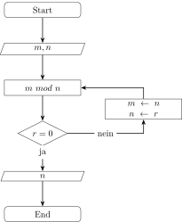

Algorithmen
Der Begriff Algorithmus ist aktuell omnipräsent. Oft hat der Begriff allerdings einen negativen Unterton weil er mit etwas intransparenten und unkontrollierbaren in Verbindung gebracht wird. Aber was ist eigentlich ein Algorithmus?
Die Wikipedia definiert den Begriff folgendermassen:
Ein Algorithmus […] ist eine eindeutige Handlungsvorschrift zur Lösung eines Problems oder einer Klasse von Problemen. Algorithmen bestehen aus endlich vielen, wohldefinierten Einzelschritten.
Donald E. Knuth beschreibt im ersten Band seines fundamentalen, sieben Bände umfassenden, Werkes “The Art of Computer Programming” die Herkunft des Begriffes. Es handelt sich um die mit der Zeit entstellte Form des letzten Teils des Namens von Abu ’Abd Allah Muhammad ibn Musa al-Khwarizmi1, eines persischen Mathematikers aus dem 9. Jahrhundert.
Salopp umformuliert ist ein Algorithmus ein Rezept zum Lösen konkreter Probleme.
Algorithmen in der Informatik
Wie Alogrithmen in der Informatik verwendet werden, soll am Beispiel der Berechnung des grössten gemeinsamen Teilers mit dem euklidischen Algorithmus gezeigt werden. Der griechische Mathematiker Euklid, nach dem der Algorithmus benannt ist, hat das Verfahren im 3. Jahrhundert v. Chr. beschrieben.
Algorithmus E (Euklidischer Algorithmus). Gegeben seien zwei positive natürliche Zahlen \(m\) und \(n\). Gesucht ist deren grösster gemeinsamer Teiler.
E1. Rest berechnen. Teile \(m\) durch \(n\). Der Rest sei \(r\). (Es gilt \(0 \leq r < n\).)
E2. Ist der Rest null? Wenn \(r = 0\) endet der Algorithmus und \(n\) ist die Lösung.
E3. Reduzieren. Setze \(m \leftarrow n, n \leftarrow r\) und gehe zurück zu Schritt E1.2
Der Algorithmus E kann in das folgende Flussdiagramm übersetzt werden.

Die graphische Darstellung von Algorithmus E als Flussdiagramm hilft, eine entsprechende Funktion in Python zu implementieren.
def euclid(m : int, n : int) -> int:
r = m % n
while r > 0:
m = n
n = r
r = m % n
return nExkurs Sichtbarkeit von Variablen
Die Namen von Variablen in Python sind nicht im ganzen Programm sichtbar. Entscheidend ist, wo die Variable definiert werden. Variablen, die innerhalb einer Funktion definiert werden, sind nur innerhalb dieser Funktion sichtbar. Variablen, welche in einem File (Modul) definiert werden, sind grundsätzlich nur in diesem Modul sichtbar.
So ist es möglich, den gleichen Namen für verschiedene Variablen zu vergeben.
Aufgabe
Berechnen Sie von Hand nach dem Euklidischen Algorithmus den grössten gemeinsamen Teiler für die Zahlen 544 und 119. Erstellen Sie eine Tabelle in welcher Schlaufe für Schlaufe die Werte für die Variablen \(m\) und \(n\) eingetragen sind.
Musterlösung
Der grösste gemeinsame Teiler für 544 und 119 ist 17.
| Durchlauf | m | n |
|---|---|---|
| 0 | 544 | 119 |
| 1 | 119 | 68 |
| 2 | 68 | 51 |
| 3 | 51 | 17 |
Eine weiteres Beispiel findet sich in diesem Jupyter Notebook.
Die Musterlösung findet sich hier.
Hier findet sich die Musterlösung der in der Lektion besprochenen vorgehensweise.